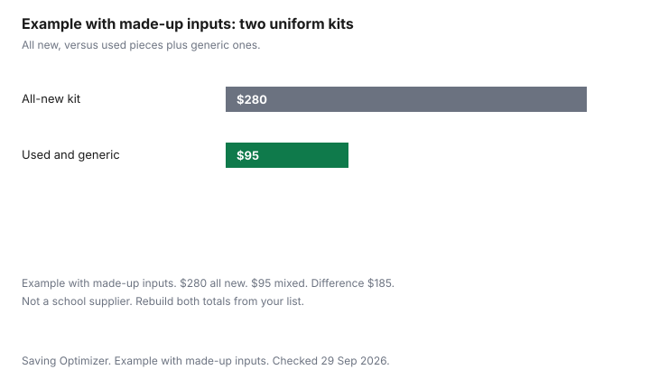

Clothing · Canada
School Uniform Costs in Canada: Used Sales, Sizing Up and What Really Needs to Be New
A uniform list is a school document, not a national price. The items that have to be new are the ones that school says must carry its logo or come from its supplier. Everything else is a candidate for a used sale, a sibling, or a plain garment in the colour the list allows. This page is the parent's checklist for separating those two piles. It does not cite a school supplier's price list, so it does not print a crested-shirt dollar. Ontario's point-of-sale rebate, which can apply to qualifying children's clothing including pieces a uniform list happens to include, is the kids' clothing rebate guide. The September list that is not a uniform is back-to-school clothing. Passing the outgrown blazer on is selling kids' clothes. The household line that has to hold all of this is a monthly clothing budget. Education only. Not tax advice.
Key takeaways
- Read the school's own list. Logo pieces and supplier-only pieces are the new pile. Generic polos, socks, and tights are the used or plain pile only when that list allows them.
- Used-uniform sales are a school or parent-council event. Ask the office for the date. This guide does not cite a province-wide sale week.
- A size up saves money only if the school allows the fit and a hem can bring the length back. Hem prices from two Canadian shops are on the tailoring guide, not a uniform average.
- Ontario rebates the 8 percent provincial portion of the HST on qualifying children's clothing, up to and including girls' Canada Standard Size 16 and boys' size 20. Adult sizes bought for a child are excluded. Updated 19 March 2025 on ontario.ca.
- Example with made-up inputs: an all-new kit at $280 versus a mix of used and generic pieces at $95. Those dollars are not a school.
Typical uniform lists
Most uniform lists, when a school publishes one, break into the same jobs: a crested shirt or blouse, a bottom in a set colour, a sweater or vest that may or may not carry the crest, a gym strip, socks or tights, and shoes. Treat that pattern as a way to read your sheet. It is not a count of Canadian schools. Open the PDF or the portal your school sent. Highlight every line that says the logo is required or that names a single supplier. Those lines are what really has to be new, unless that same sheet also points at a used-sale table.
Lines that name a colour and not a supplier are the generic pile. A navy polo without a crest, grey socks, and black tights can come from a thrift shop, a sibling, or a sale, if the list does not forbid it. A crest you sew on yourself is only a saving when the school accepts a parent-applied crest. Some lists require the crest to be applied by the supplier so the placement matches. If the sheet is silent, ask the office in writing. A guess that fails a dress check in September is a second purchase.
| Item | Treat as new when | Used or generic when |
|---|---|---|
| Crested shirt, blouse, or sweater | The list requires the school's logo or a named supplier. | The used-uniform sale sells last year's crest, or the list allows a plain shirt. |
| Pants, kilt, or tunic | The list names a supplier, a tartan, or a style you cannot match in a plain garment. | The list names a colour only. A hem can fix length. See the tailoring guide for shop prices, not a uniform price. |
| Gym strip | The shirt must carry the school name for the class. | The gym rule is a colour. A plain shirt in that colour is the generic pile. |
| Socks, tights, belt | Rarely. Only if the list names a brand or a crest. | Usually. Buy the colour, in a size the child can wear now. |
| Shoes | The list names a model, or the pair is for safety and the school forbids used. | The list names a colour. Fit still has to be this child's foot. The kids' shoe guide is the fit check. |
| Outer layer for the commute | Only if the school requires a crested coat on the property. | The coat is not part of the dress code. Any winter coat that fits is a household decision, not a uniform line. |
School used-uniform sales
The useful sale is the one your school or its parent council runs, because the crests on the table are the crests the office already accepts. Ask the office three things: the date, whether pieces are priced or by donation, and whether a summer-uniform shirt is sold at the same event as the winter tunic. This guide does not cite a date, a price, or a rule that every school holds a sale in June. A neighbourhood resale store will not have your crest unless a family from that school brought it in. The kids' consignment guide is how those families move ordinary clothes. A crested blazer may interest them only in the week before school.
When you sell last year's uniform, label the size from the tag and the school name. A buyer who drives across the city for the wrong crest will not thank you, and you will still have the blazer. When you buy, check the hem, the zipper, and the smell the same way the thrift guide says to check any used garment. A crest does not mean the cloth has life left. Budget the dry-clean or the wash the care label allows before you count the purchase as cheaper. Care symbols are on the make clothes last longer guide.
Sizing and hemming
Buying a size up is a bet that the child will grow into the garment before it looks wrong and before the school objects. It works on a kilt or a pair of trousers when the waist still stays up and a hem can be let down later, or taken up now so the child is not walking on the cloth. It fails when the shoulders of a blazer drown the child, because shoulders are the structural alteration. The tailoring guide separates a fixable hem from a shoulder, and it quotes published hem prices from Powell River and Montreal so you can see that a hem is a real bill. Those prices are not a uniform-shop price. Get the quote on the garment you have.
Measure against the list's own notes. Some schools print "no more than one size up" or forbid rolling sleeves. If yours does, the extra size is not a saving. If yours does not, still try the piece on. A tunic that trips on the stairs is a safety problem the used-sale discount does not fix. Shoes are the exception to sizing up: extra length in a shoe is a trip, not a plan. Fit shoes to the foot that will wear them this term. The kids' shoe guide is that check.
| Choice | When it helps | When to skip it |
|---|---|---|
| Buy this size, new or used | The piece fits the dress code now and the child will wear it out before they outgrow it. | You already own a sibling's piece in this size that passes the stain check. |
| Buy one size up and hem | The waist and shoulders fit. Only the length is long. The school allows the hem. | The shoulders are wrong, or the list forbids a turned hem. |
| Sell at the school's used sale | You are done with that size and the sale is the audience that wants the crest. | You have a younger sibling who will need the crest next year. Hold it. |
| Sell online after the sale | The school sale has passed and the crest is named in the listing. | The fee on a low price eats the keep. See the kids' selling guide for Poshmark's published fee. |
Name labels and loss prevention
The cheapest uniform is the one that comes back from the lost-and-found. Put the child's name where the school asks, usually inside the collar and on the waistband, and on shoes if the gym bag is a shared bin. A label you can read after washing beats a marker that disappears. This guide does not cite a label-maker price. Use what you have, including a laundry marker, and spend on a product only after you have seen its price. Check the lost-and-found on a schedule you will keep, not after the bin has been donated. A crested sweater with no name is the school's next used-sale donation, and you will buy it back from yourself at full supplier price.
One spare of the pieces that vanish, such as a crested gym shirt, is a different decision from a spare of everything. The spare is worth it when a lost shirt means the child sits out the class. It is not worth it when you are buying a second blazer "just in case" before the first one has been worn. Write the spare on the list so two adults do not each buy one.
Budgeting across siblings
Siblings are the used sale you do not have to attend. Hold crested pieces that the next child will be allowed to wear. Let down a hem when the tailoring quote is the smaller bill. Pass plain socks and tights only if they are still sound. Do not pass shoes down as a rule. A shoe that fit one child is often packed at the heel for the next. The fit check is the kids' shoe guide.
Put the uniform in the same monthly clothing line as the rest of the closet, which is the household budget guide, or in a sinking fund you already use for irregular bills. The sinking-fund guide is written for property tax and insurance. The method, a monthly amount toward a known annual bill, is the same shape. The dollars are not. Example with made-up inputs. One child, all new, $280. The same list built from a used crested blazer, a sibling's tunic, and generic shirts, $95. The difference in this example is $185. Those two totals are not a supplier and not a target. Rebuild them from your school's sheet. If two children need new crests in the same September, the $280 does not become $560 unless both lists are actually all new. Share the pieces the dress code lets you share.
On tax, Ontario's point-of-sale rebate is the rule this guide can cite. The ontario.ca page, updated 19 March 2025 and checked 29 Sep 2026, says Ontario provides a point-of-sale rebate of the 8 percent provincial portion of the HST on children's clothing and footwear, among other items. Clothing qualifies up to and including girls' Canada Standard Size 16 and boys' Canada Standard Size 20, or small, medium, or large if there is no Canada Standard Size. Excluded: costumes, adult-sized garments even if bought for a child, and garments designed to prevent bodily injury. If the supplier does not give the rebate, the page points you to CRA form GST189. A crested shirt in a qualifying size can fall under that clothing rule. A crested shirt in an adult size does not, even if a child wears it as a uniform. This page does not cite a separate federal credit for school uniforms. Employees looking at work clothes have a different guide, work clothes and the CRA, and a parent's uniform receipt is not that claim. Other provinces: check your province. Confirm the receipt. Not tax advice.

Sources & date stamps
- Ontario, HST point-of-sale rebates, ontario.ca, updated 19 March 2025, checked 29 Sep 2026. 8 percent provincial portion. Girls' Canada Standard Size 16 and boys' size 20. Exclusions include costumes, adult sizes, and injury-prevention garments. Form GST189 if the supplier does not rebate it.
- No school board or uniform supplier price list is cited. Used-sale dates stay with your school office.
Frequently asked questions
Do school uniforms have to be bought new?
Only the lines your school says must be new, logo-specific, or supplier-specific. Plain pieces in the colour the list allows can be used or generic. A used-uniform sale run by the school is where last year's crest is already accepted. Ask the office. This guide does not cite a rule that every piece must be new.
Where can I find used uniforms?
Start with the school's own sale or parent council, then a younger sibling, then a listing that names the school and the crest. A general thrift shop rarely has your crest. The kids' selling guide covers cash resale for ordinary clothes. Ask the office for the sale date. No province-wide date is cited here.
Should I buy a size up?
Only when the waist and shoulders already fit, the school allows a hem, and you are buying time on the length. Shoulders are a structural alteration, not a hem. Shoes should not be sized up as a growth plan. Extra length in a shoe is a trip. The tailoring guide separates a hem from a shoulder and quotes shop prices that are not a uniform average.
Can generic pieces replace logo items?
They can when the school list names a colour and does not require a crest or a named supplier. When the list requires the logo, a plain polo is a second purchase waiting to happen. If the sheet is silent, ask the office in writing before you attach a crest yourself.
Are uniforms eligible for any tax relief?
Ontario rebates the 8 percent provincial portion of the HST on qualifying children's clothing, up to and including girls' Canada Standard Size 16 and boys' size 20. Adult sizes are excluded even if a child wears them as a uniform. This guide does not cite a separate federal uniform credit. Other provinces: check your province. Not tax advice.